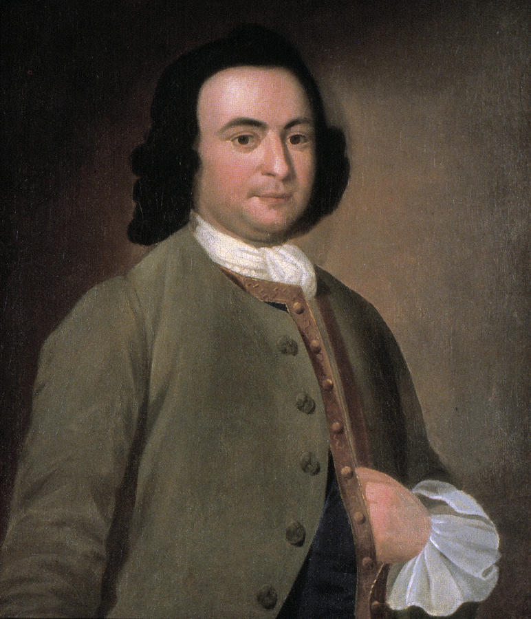

US History — Summer School | Semester 1, Lesson 01
Founding the Nation
1776 – 1870
Essential Question
How did Enlightenment ideas shape a new kind of government — and does it still work?
❧
Philadelphia, Pennsylvania. Summer, 1787. The windows are nailed shut so no one outside can hear the arguments. Fifty-five men in wool coats are sweating through a heat wave — and trying to build a country that has never existed before.
They did not agree on much. They argued about power, about slavery, about who deserved a voice. But they kept going — because they knew that if they walked away, the American experiment was finished. What came out of that locked room became the foundation of the government you live under today.
✦
Chapter 1 — The Ideas That Started Everything
John Locke, English philosopher, c. 1697. His ideas about natural rights shaped Thomas Jefferson's writing. | Wikimedia Commons
Before there was a Constitution, there were ideas. And those ideas came from a group of thinkers in Europe called the philosophers of the Enlightenment. The Enlightenment was a movement in the 1600s and 1700s when thinkers started asking a dangerous question: What if kings don't actually have the right to rule over everyone?
One of the most important thinkers was an Englishman named John Locke. Locke said that every person is born with rights that no government can take away. He called them unalienable rightsRights every person is born with that no government can legally take away — they belong to you just for being human. — rights attached to you as a human being, not given to you by a king. Locke said people had the right to life, liberty, and property. If a government refused to protect those rights, the people had the right to replace it.
Thomas Jefferson read Locke carefully. When Jefferson wrote the Declaration of Independence in 1776, Locke's ideas were all over it. Jefferson changed "property" to "the pursuit of happiness" — but the argument was the same. Governments exist to protect the rights of the people. When they stop doing that, the people can tear them down and start over.
A French thinker named Montesquieu added another idea: separation of powersThe idea that government should be split into three separate parts so no single person or group can control everything.. He said government should be split into separate parts — one to make laws, one to carry them out, one to judge whether they are fair — so no single person could ever control everything. The American Founders built that exact structure into the Constitution. Students in San Diego who have seen local, state, and federal government argue over things like immigration policy are watching that exact system in action every day.
Scene at the Signing of the Constitution of the United States, painted by Howard Chandler Christy, 1940. Fifty-five delegates met in Philadelphia in 1787 to write the new government's rulebook. | Wikimedia Commons
❧
Chapter 2 — The Declaration and the Constitution
The Declaration of Independence — signed on July 4, 1776 — was not a law. It was a breakup letter to England. It told the world why the colonies were leaving British rule. Its most famous sentence begins: "We hold these truths to be self-evident, that all men are created equal..." In 1776, those words were revolutionary. No government in history had ever been built on that idea.
But the Declaration didn't tell anyone how to actually run a country. That took eleven more years. In 1787, the Founders met in Philadelphia to write the Constitution — the actual rulebook for the new government. They had already tried one version called the Articles of Confederation, and it had failed badly. The government under those Articles was so weak it couldn't even collect taxes or protect the borders.
First page of the U.S. Constitution, signed September 17, 1787. The words "We the People" appear at the top in large script. | National Archives / Wikimedia Commons
The Constitution fixed the problem of weak government by creating three branches and giving each one different powers. The idea was simple: no single branch could ever get too powerful because the other two could stop it. That system is called checks and balancesA system where each branch of government can limit the power of the other two branches, so no one branch can do whatever it wants.. If one branch tries something extreme, the others can say no.
The Constitution also divided power between the national government and the state governments. That system is called federalismA system that divides government power between the national government and the state governments, giving each group different responsibilities.. Some things — like printing money and declaring war — only the national government could do. Other things were left to the states. This compromise kept both sides in the room long enough to finish the document.
The Constitution was ratified — officially approved by the states — in 1788. It became the law of the land. But as soon as the ink dried, a large group of people said it wasn't enough.
"We hold these truths to be self-evident, that all men are created equal, that they are endowed by their Creator with certain unalienable Rights, that among these are Life, Liberty and the pursuit of Happiness. That to secure these rights, Governments are instituted among Men, deriving their just powers from the consent of the governed."
— Thomas Jefferson, Declaration of Independence, July 4, 1776
Jefferson is telling the King of England — and the whole world — that the American colonies are done being ruled by a government they never chose. This sentence became the most famous argument for human rights in history.
Question 1: Jefferson says governments get their power from "the consent of the governed." In plain language — who gives the government its power to rule?
Question 2: Jefferson calls these rights "unalienable." Based on what you read in Chapter 1, explain what that word means and why it was a revolutionary idea in 1776.
✦
Chapter 3 — The Bill of Rights: "Not Enough"
James Madison, "Father of the Constitution" and author of the Bill of Rights, c. 1821. | Wikimedia Commons
When the Constitution was finished in 1787, not everyone was happy. A large group called the Anti-Federalists said the Constitution was dangerous. It gave the national government too much power — and it said nothing about the rights of ordinary people. They refused to support it unless something was added.
So the Founders made a deal. If the states would ratify the Constitution, James Madison would write a list of specific rights that the government could never take away from individuals. He wrote twelve amendments. Ten were approved in 1791. That list became the Bill of RightsThe first ten amendments to the Constitution, listing specific rights the government can never take away from individual citizens..
Here is what those ten amendments protect, in plain language:
1stFreedom of speech, religion, press, and the right to protest the government.
2ndThe right to own weapons.
3rdSoldiers cannot be forced into your home without your permission.
4thPolice need a warrant to search your home or your belongings.
5thYou do not have to testify against yourself in court.
6thYou have the right to a speedy and fair trial.
7thYou have the right to a jury trial in civil cases.
8thNo cruel or unusual punishment.
9thPeople have rights that are not listed here, too.
10thPowers not given to the federal government belong to the states.
The original Bill of Rights, 1789. Congress proposed twelve amendments; ten were ratified. | National Archives / Wikimedia Commons

George Mason of Virginia refused to sign the Constitution because it had no Bill of Rights. His stand forced the Founders to add one. | Wikimedia Commons
These ten amendments became the floor — the minimum protection every American was guaranteed. Every debate about rights in this country since 1791 has started with these ten. The next time a San Diego student sees a story about police searches, free speech on social media, or the right to protest — they are watching the Bill of Rights at work.
❧
Chapter 4 — The Civil War and Reconstruction: Rewriting the Rules
The original Constitution had a massive contradiction buried inside it. It spoke about liberty and equality — but it also allowed slavery. The Founders could not agree on how to handle slavery in 1787, so they left it in and hoped the problem would solve itself. It did not.
By 1861, the contradiction exploded. Eleven Southern states left the Union rather than give up slavery. The Civil War lasted four years and killed over 620,000 Americans — more than in any other war in U.S. history. When the North won in 1865, Congress had to decide: What do we do now?
An 1864 engraving depicting the reading of the Emancipation Proclamation to enslaved people in the South. Lincoln issued the Proclamation on January 1, 1863. | Library of Congress / Wikimedia Commons
The answer was Reconstruction — a period from 1865 to 1877 when Congress tried to rebuild the South and extend full rights to formerly enslaved people. To do that, they had to change the Constitution itself. Three new amendments were added in just five years:
13thRatified 1865
Slavery is abolished everywhere in the United States. Forever.
14thRatified 1868
Anyone born in the U.S. is a citizen. All citizens get equal protection under the law.
15thRatified 1870
No one can be denied the right to vote because of their race.
"The First Vote," Harper's Weekly, November 16, 1867. Black men in the South vote for the first time after the 15th Amendment. | Library of Congress / Wikimedia Commons
These three amendments completely rewrote what the Constitution meant. The 14th Amendment in particular became the most powerful amendment ever added. Almost every major civil rights ruling since — school desegregation, voting rights, women's rights, LGBTQ rights, immigration rights — rested on its promise of equal protection.
But changing the words did not change reality overnight. After Reconstruction ended in 1877, Southern states found ways around the amendments. Black Americans still faced legal discrimination, violence, and voter suppression for nearly a hundred more years. The Constitution had been updated — but the fight to make it real was just beginning.
For students in San Diego whose families came from Mexico, Central America, or Southeast Asia, the 14th Amendment is personal. It is the reason that being born on U.S. soil — anywhere on U.S. soil — automatically makes a person a citizen, no matter where their parents came from.
"All persons born or naturalized in the United States, and subject to the jurisdiction thereof, are citizens of the United States and of the State wherein they reside. No State shall make or enforce any law which shall abridge the privileges or immunities of citizens of the United States; nor shall any State deprive any person of life, liberty, or property, without due process of law; nor deny to any person within its jurisdiction the equal protection of the laws."
— 14th Amendment to the U.S. Constitution, Section 1, ratified July 9, 1868
Congress wrote this amendment to make sure states could never create a second class of citizens — but this exact sentence is still being argued in courts today, about immigration, voting rights, and who counts as fully American.
How This Still Matters Today
The document written in a locked room in 1787 is still the law you live under — and people are still fighting in court over what it means right now.
The United States Supreme Court building, Washington D.C. Every major rights debate in America eventually ends up here — argued using the same Constitution written in 1787. | Wikimedia Commons
If you could add one amendment to the Constitution right now — one right that isn't protected yet — what would it be, and who would it protect?
San Diego Was Not American Land When the Constitution Was Signed — And That Changed Everything in 1848
Old Town San Diego, the site of the first European settlement in California. When the U.S. Constitution was ratified in 1788, this land belonged to New Spain. | Wikimedia Commons
When the U.S. Constitution was ratified in 1788, San Diego was not American land. It was part of New Spain — and later, Mexico. The people living here lived under entirely different laws. It wasn't until the Treaty of Guadalupe Hidalgo in 1848 that San Diego officially became part of the United States, and residents here became subject to the Constitution for the first time.
That treaty promised to protect the property rights and citizenship of Mexicans who stayed — but many of those promises were broken. The question of who the Constitution actually protects has been San Diego's question since 1848, and it is still being asked along the border today.